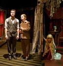
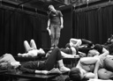
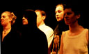
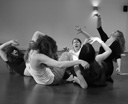
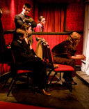
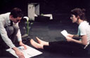
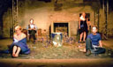
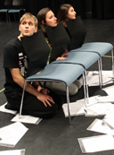
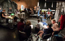
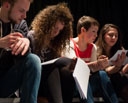

    <div class="sub-content collaborators">
     <h1>Fail Better Productions - Collaborators</h1>

     <div class="image-frame-left"><a href="../productions/lorca/"></a></div>
     <div class="image-frame-left"><a href="../productions/persephone/"></a></div>
     <div class="image-frame-left"><a href="../productions/head/"></a></div>
     <div class="image-frame-left"><a href="../productions/persephone/"></a></div>
     <div class="image-frame-left"><a href="../productions/lorca/"></a></div>
     <div class="image-frame-left"><a href="../productions/echoandnarcissus/"></a></div>
     <div class="image-frame-left"><a href="../productions/crave/"></a></div>
     <div class="image-frame-left"><a href="../productions/discords/"></a></div>
<!--     <div class="image-frame-left"><a href="../productions/fragments/"></a></div> -->
     <div class="image-frame-left"><a href="../productions/fragments/"></a></div>

     <ul>
      <li>Adam Barber		(<a href="../productions/crave/" class="fbp-show">Crave</a>)</li>
      <li>Adam Skuse		(Photography)</li>
      <li>Alexandra Mackenzie	(<a href="../productions/pinter/" class="fbp-show">Pinter Double Bill</a>)</li>
      <li>Andy Gray/<a href="http://www.ashmorevisuals.co.uk/" target="_blank" title="http://www.ashmorevisuals.co.uk/ - Opens in a new window">ashmorevisuals</a>		(Photography)</li>
      <li>Annabel Betts		(<a href="../productions/lorca/" class="fbp-show">Lorca</a>; <a href="../productions/persephone/" class="fbp-show">Persephone Project</a>)</li>
      <li>Ant Lynch			(<a href="../productions/lorca/" class="fbp-show">Lorca</a>)</li>
      <li>Antonio De Gregorio	(<a href="../productions/echoandnarcissus/" class="fbp-show">Echo and Narcissus</a>)</li>
      <li><a href="http://www.bencrystal.com/" target="_blank" title="http://www.bencrystal.com/ - Opens in a new window">Ben Crystal</a>		(<a href="../productions/stasis/" class="fbp-show">Beckett Shorts</a>)</li>
      <li>Ben Edmunds		(<a href="../productions/discords/" class="fbp-show">Discords</a>)</li>
      <li>Ben Jacobs		(<a href="../productions/persephone/" class="fbp-show">Persephone Project</a>; <a href="../productions/lorca/" class="fbp-show">Lorca</a>)</li>
      <li>Ben Lambert		(<a href="../productions/phaedraslove/" class="fbp-show">Phaedra's Love</a>)</li>
      <li>Bojana Kozarevic	(<a href="../productions/persephone/" class="fbp-show">Persephone Project</a>)</li>
      <li>Briony Rawle		(<a href="../productions/lorca/" class="fbp-show">Lorca</a>)</li>
      <li>Cara Verkerk		(<a href="../productions/persephone/" class="fbp-show">Persephone Project</a>; <a href="../productions/lorca/" class="fbp-show">Lorca</a>)</li>
      <li>Carl Cerny		(<a href="../productions/lorca/" class="fbp-show">Lorca</a>; <a href="../productions/discords/" class="fbp-show">Discords</a>)</li>
      <li>Charlie Moss		(Website)</li>
      <li>Chris Price		(<a href="../productions/echoandnarcissus/" class="fbp-show">Echo and Narcissus</a>)</li>
      <li><a href="http://www.christophertester.com/" target="_blank" title="http://www.christophertester.com/ - Opens in a new window">Christopher Tester</a>		(<a href="../productions/crave/" class="fbp-show">Crave</a>; <a href="../productions/head/" class="fbp-show">Head</a>; <a href="../productions/stasis/" class="fbp-show">Beckett Shorts</a>; <a href="../productions/madman/" class="fbp-show">Diary of a Madman</a>; <a href="../productions/persephone/" class="fbp-show">Persephone Project</a>)</li>
      <li>Claire Hilton		(<a href="../productions/head/" class="fbp-show">Head</a>; <a href="../productions/phaedraslove/" class="fbp-show">Phaedra's Love</a>)</li>
      <li>Edward Davis		(<a href="../productions/fragments/" class="fbp-show">Fail Better Fragments</a>)</li>
      <li>Finnian O'Neill	(<a href="../productions/echoandnarcissus/" class="fbp-show">Echo and Narcissus</a>)</li>
      <li>Fiona Marr		(<a href="../productions/echoandnarcissus/" class="fbp-show">Echo and Narcissus</a>)</li>
      <li>Fran Duncan		(<a href="../productions/discords/" class="fbp-show">Discords</a>; <a href="../productions/fragments/" class="fbp-show">Fail Better Fragments</a>)</li>
      <li>Gary Abrahams		(<a href="../productions/head/" class="fbp-show">Head</a>; <a href="../productions/phaedraslove/" class="fbp-show">Phaedra's Love</a>)</li>
      <li>Genevieve Raghu	(<a href="../productions/lorca/" class="fbp-show">Lorca</a>)</li>
      <li>Giles Burden		(<a href="../productions/head/" class="fbp-show">Head</a>; <a href="../productions/phaedraslove/" class="fbp-show">Phaedra's Love</a>)</li>
      <li>Hannah Tottenham	(<a href="../productions/persephone/" class="fbp-show">Persephone Project</a>; <a href="../productions/lorca/" class="fbp-show">Lorca</a>)</li>
      <li>Hari Carpenter	(<a href="../productions/discords/" class="fbp-show">Discords</a>)</li>
      <li>Helen Bradbury	(<a href="../productions/crave/" class="fbp-show">Crave</a>; <a href="../productions/phaedraslove/" class="fbp-show">Phaedra's Love</a>; <a href="../productions/persephone/" class="fbp-show">Persephone Project</a>)</li>
      <li>Ian Oxlade		(<a href="../productions/pinter/" class="fbp-show">Pinter Double Bill</a>)</li>
      <li>James Johnstone	(Website)</li>
      <li>James Keningale	(<a href="../productions/lorca/" class="fbp-show">Lorca</a>)</li>
      <li>James McPhun		(<a href="../productions/madman/" class="fbp-show">Madman</a>)</li>
      <li>Jay Saighal		(<a href="../productions/lorca/" class="fbp-show">Lorca</a>)</li>
      <li>Jenny Mills		(<a href="../productions/madman/" class="fbp-show">Madman</a>)</li>
      <li>Jesse Meadows		(<a href="../productions/lorca/" class="fbp-show">Lorca</a>; <a href="../productions/persephone/" class="fbp-show">Persephone Project</a>; <a href="../productions/madman/" class="fbp-show">Madman</a>)</li>
      <li>Jonathan Broke	(<a href="../productions/stasis/" class="fbp-show">Beckett Shorts</a>; <a href="../productions/persephone/" class="fbp-show">Persephone Project</a>; <a href="../productions/madman/" class="fbp-show">Diary of a Madman</a>)</li>
      <li>Joseph Brack		(<a href="../productions/crave/" class="fbp-show">Crave</a>)</li>
      <li>Josh Goulding		(<a href="../productions/fragments/" class="fbp-show">Fail Better Fragments</a>)</li>
      <li>Josh Roche		(<a href="../productions/persephone/" class="fbp-show">Persephone Project</a>)</li>
      <li>Kathryn Hardy		(<a href="../productions/persephone/" class="fbp-show">Persephone Project</a>)</li>
      <li>Kieran Lucas		(<a href="../productions/fragments/" class="fbp-show">Fail Better Fragments</a>)</li>
      <li>Louise Rowley		(Photography)</li>
      <li>Lucie Collins		(<a href="../productions/pinter/" class="fbp-show">Pinter Double Bill</a>; <a href="../productions/crave/" class="fbp-show">Crave</a>)</li>
      <li>Lucinka Eisler	(<a href="../productions/echoandnarcissus/" class="fbp-show">Echo and Narcissus</a>)</li>
      <li>Lucy Katz			(<a href="../productions/discords/" class="fbp-show">Discords</a>)</li>
      <li>Maria Fsadni		(<a href="../productions/persephone/" class="fbp-show">Persephone Project</a>; <a href="../productions/lorca/" class="fbp-show">Lorca</a>)</li>
      <li>Matthew Landers	(<a href="../productions/head/" class="fbp-show">Head</a>; <a href="../productions/phaedraslove/" class="fbp-show">Phaedra's Love</a>)</li>
      <li>Natalia Rossetti	(<a href="../productions/persephone/" class="fbp-show">Persephone Project</a>; <a href="../productions/lorca/" class="fbp-show">Lorca</a>; <a href="../productions/madman/" class="fbp-show">Madman</a>)</li>
      <li>Oliver Ashforth-Smith	(<a href="../productions/fragments/" class="fbp-show">Fail Better Fragments</a>)</li>
      <li>Oliver Baxter		(<a href="../productions/persephone/" class="fbp-show">Persephone Project</a>)</li>
      <li>Oliver Hayes		(<a href="../productions/discords/" class="fbp-show">Discords</a>)</li>
      <li>Oliver Turner		(<a href="../productions/lorca/" class="fbp-show">Lorca</a>)</li>
      <li>Peter Jan			(Photography)</li>
      <li>Peter Marsh/<a href="http://www.ashmorevisuals.co.uk/" target="_blank" title="http://www.ashmorevisuals.co.uk/ - Opens in a new window">ashmorevisuals</a>		(Photography)</li>
      <li>Rebecca Tamas		(<a href="../productions/persephone/" class="fbp-show">Persephone Project</a>)</li>
      <li>Rima Dodd			(<a href="../productions/discords/" class="fbp-show">Discords</a>)</li>
      <li>Rob Batterbee		(<span class="fbp-show">New Work Festival</span>)</li>
      <li><a href="http://www.photoboxgallery.com/robgilbertphotography" target="_blank" title="http://www.photoboxgallery.com/robgilbertphotography - Opens in a new window">Rob Gilbert</a>		(Photography)</li>
      <li>Ruth Carney		(<a href="../productions/crave/" class="fbp-show">Crave</a>)</li>
      <li>Sam Antha			(Photography)</li>
      <li>Sita Thomas		(<a href="../productions/discords/" class="fbp-show">Discords</a>)</li>
      <li>Soraya Nabipour		(<a href="../productions/discords/" class="fbp-show">Discords</a>)</li>
      <li>Steph P&ouml;tschke	(<a href="../productions/phaedraslove/" class="fbp-show">Phaedra's Love</a>; <a href="../productions/persephone/" class="fbp-show">Persephone</a>)</li>
      <li>Stephanie Taylor		(<a href="../productions/discords/" class="fbp-show">Discords</a>)</li>
      <li>Thom May			(<a href="../productions/discords/" class="fbp-show">Discords</a>)</li>
      <li>Tom Syms			(<a href="../productions/persephone/" class="fbp-show">Persephone Project</a>; <a href="../productions/discords/" class="fbp-show">Discords</a>)</li>
      <li>William Cardozo-Boohan	(<a href="../productions/persephone/" class="fbp-show">Persephone Project</a>)</li>
      <li>Zoe Lambrakis		(<a href="../productions/fragments/" class="fbp-show">Fail Better Fragments</a>)</li>
      <li><a href="http://www.zoesimon.co.uk/" target="_blank" title="http://www.zoesimon.co.uk/ - Opens in a new window">Zo&euml; Simon</a>	(<a href="../productions/echoandnarcissus/" class="fbp-show">Echo and Narcissus</a>; <a href="../productions/head/" class="fbp-show">Head</a>; <a href="../productions/phaedraslove/" class="fbp-show">Phaedra's Love</a>)</li>
      <li>Zo&euml; Walshe	(<a href="../productions/persephone/" class="fbp-show">Persephone Project</a>; <a href="../productions/lorca/" class="fbp-show">Lorca</a>; <a href="../productions/discords/" class="fbp-show">Discords</a>)</li>
     </ul>

<!--
     <p class="past-cast">
      Alexandra Mackenzie (<span class="fbp-show">Pinter Double Bill</span>)<br />
      Antonio De Gregorio (<span class="fbp-show">Echo and Narcissus</span>)<br />
      <a href="http://www.bencrystal.com/" target="_blank" title="http://www.bencrystal.com/ - Opens in a new window">Ben Crystal</a> (<span class="fbp-show">Stasis</span>)<br />
      Ben Lambert (<span class="fbp-show">Phaedra's Love</span>)<br />
      <a href="http://www.christophertester.com/" target="_blank" title="http://www.christophertester.com/ - Opens in a new window">Chris Tester</a> (<span class="fbp-show">Crave</span>, <span class="fbp-show">Head r.r.</span>, <span class="fbp-show">Stasis</span>, <span class="fbp-show">Diary of a Madman</span>, <span class="fbp-show">Persephone r.r.</span>)<br />
      Finnian O'Neill (<span class="fbp-show">Echo and Narcissus</span>)<br />
      Fiona Marr (<span class="fbp-show">Echo and Narcissus</span>)<br />
      Gary Abrahams (<span class="fbp-show">Head</span>, <span class="fbp-show">Phaedra's Love</span>)<br />
      Helen Bradbury (<span class="fbp-show">Crave</span>, <span class="fbp-show">Phaedra's Love</span>, <span class="fbp-show">Persephone r.r.</span>)<br />
      Ian Oxlade (<span class="fbp-show">Pinter Double Bill</span>)<br />
      Jonathan Broke (<span class="fbp-show">Stasis</span>, <span class="fbp-show">Persephone r.r.</span>)<br />
      Joseph Brack (<span class="fbp-show">Crave</span>)<br />
      Lucie Collins (<span class="fbp-show">Pinter Double Bill</span>, <span class="fbp-show">Crave</span>)<br />
      Lucinka Eisler (<span class="fbp-show">Echo and Narcissus</span>)<br />
      Matthew Landers (<span class="fbp-show">Head</span>, <span class="fbp-show">Phaedra's Love</span>)<br />
      Steph P&ouml;tschke (<span class="fbp-show">Phaedra's Love</span>, <span class="fbp-show">Persephone r.r.</span>)<br />
      <a href="http://www.zoesimon.co.uk/" target="_blank" title="http://www.zoesimon.co.uk/ - Opens in a new window">Zo&euml; Simon</a> (<span class="fbp-show">Echo &amp; Narcissus</span>, <span class="fbp-show">Head</span>, <span class="fbp-show">Phaedra's Love</span>)
     </p>

     <h2>Crew</h2>
     <p class="past-company">
      Adam Barber (<span class="fbp-show">Crave</span>)<br />
      Chris Price (<span class="fbp-show">Echo and Narcissus</span>)<br />
      Claire Hilton (<span class="fbp-show">Head</span>, <span class="fbp-show">Phaedra's Love</span>)<br />
      Dave Thwaites (<span class="fbp-show">Stasis</span>, <span class="fbp-show">Diary of a Madman</span>)<br />
      Giles Burden (<span class="fbp-show">Head</span>, <span class="fbp-show">Phaedra's Love</span>)<br />
      Ruth Carney (<span class="fbp-show">Crave</span>)
     </p>

     <h2>Media</h2>
     <p class="past-company">
      Adam Skuse (Production photography: <span class="fbp-show">A Kind of Alaska</span>)<br />
      Charlie Moss<br />
      Dave Thwaites (Film and Production photography: <span class="fbp-show">Stasis</span>, <span class="fbp-show">Diary of a Madman</span>)<br />
      James Johnstone - <a href="http://www.a7communications.co.uk/" target="_blank" title="http://www.a7communications.co.uk/ - Opens in a new window">A7 Communications</a> (Website design)<br />
      Louise Rowley (Photography: <span class="fbp-show">Crave</span>, <span class="fbp-show">Head</span>, <span class="fbp-show">Phaedra's Love</span>)<br />
      Peter Jan (Production and Publicity photography: <span class="fbp-show">Echo and Narcissus</span>)<br />
      Peter Marsh/<a href="http://www.ashmorevisuals.co.uk/" target="_blank" title="http://www.ashmorevisuals.co.uk/ - Opens in a new window">ashmorevisuals</a> (Production photography: <span class="fbp-show">Persephone</span>, <span class="fbp-show">Play Without a Title</span>)<br />
      <a href="http://www.photoboxgallery.com/robgilbertphotography" target="_blank" title="http://www.photoboxgallery.com/robgilbertphotography - Opens in a new window">Rob Gilbert</a> (Production photography: <span class="fbp-show">Stasis</span>)<br />
      Sam Antha (Publicity photography: <span class="fbp-show">Diary of a Madman</span>)
     </p>
-->
    </div>